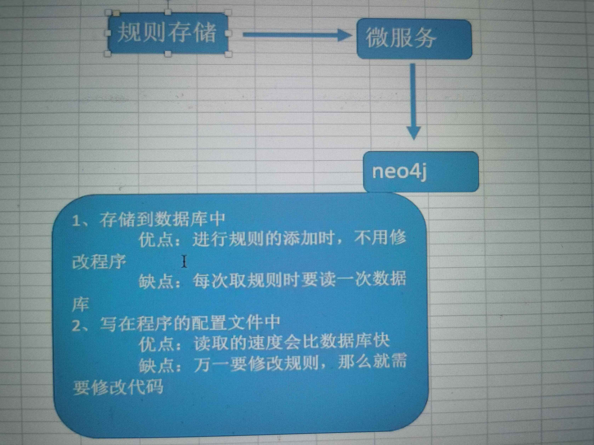

的觐见的进件的规则的存储
规则引擎理解
由于业务来创建查询语句，程序对数据库进行查询

规则引擎的开发
规则引擎
1、申请人之前有多少个逾期的进件
match (p:Person)-[h:HAS_APPLICATION]->(a:Application) where a.status="VOER_DUE" and p.persid="24301" return
count(a)
2、申请人的一度关系中有多少个触碰黑名单
match(p:Person)-[]-(p1:Person)-[h:HAS_PHONE]-(b:Black) where p.personid="243010"
### return p,p1,h,b
count（b）
##这里的b是电话的另一个标签
2、申请人的二度关系中有多少个触碰黑名单
match(p:Person)-[]-(p1:Person)-[]-(p:Person)-[h:HAS_PHONE]-(b:Black) where p.personid="243010"
### return p,p1,h,b
count（b）
规则引擎代码开发
SpringBoot就是极少的配置跑去了以前spring框架的繁琐的配置项
- 新建maven工程
Groupid：com.sft.ai.kg
artifactid:rule-engineer-server
- 引包
<dependencies>
<dependency>
<groupId>org.springframework.boot</groupId>
<artifactId>spring-boot-starter-web</artifactId>
<version>2.2.5.RELEASE</version>
</dependency>
<dependency>
<groupId>io.springfox</groupId>
<artifactId>springfox-swagger2</artifactId>
<version>2.6.1</version>
</dependency>
<dependency>
<groupId>io.springfox</groupId>
<artifactId>springfox-swagger-ui</artifactId>
<version>2.6.1</version>
</dependency>
<dependency>
<groupId>org.projectlombok</groupId>
<artifactId>lombok</artifactId>
<version>1.16.16</version>
</dependency>
<dependency>
<groupId>org.mybatis.spring.boot</groupId>
<artifactId>mybatis-spring-boot-starter</artifactId>
<version>1.3.0</version>
</dependency>
<dependency>
<groupId>mysql</groupId>
<artifactId>mysql-connector-java</artifactId>
<version>6.0.6</version>
</dependency>
<dependency>
<groupId>org.neo4j.driver</groupId>
<artifactId>neo4j-java-driver</artifactId>
<version>1.6.3</version>
</dependency>
</dependencies>
- 创建Applicaiton.java，程序的入口
package com.sft.ai;
import org.springframework.boot.SpringApplication;
import org.springframework.boot.autoconfigure.SpringBootApplication;
import org.springframework.scheduling.annotation.EnableScheduling;
//入口类标签
@EnableScheduling
@SpringBootApplication
public class Application {
public static void main(String[] args) {
SpringApplication.run(Application.class,args);
}
}
- 创建配置swagger
package com.sft.ai.config;
import org.springframework.context.annotation.Bean;
import org.springframework.context.annotation.Configuration;
import springfox.documentation.builders.ApiInfoBuilder;
import springfox.documentation.builders.PathSelectors;
import springfox.documentation.service.ApiInfo;
import springfox.documentation.service.Contact;
import springfox.documentation.spi.DocumentationType;
import springfox.documentation.spring.web.plugins.Docket;
import springfox.documentation.swagger2.annotations.EnableSwagger2;
/**
* 配置文件，swagger-ui写起来更加的简单
*/
@Configuration
@EnableSwagger2
public class SwaggerConfig {
@Bean
public Docket api(){
return new Docket(DocumentationType.SWAGGER_2)
.apiInfo(apiInfo())
.pathMapping("/")
.select()
.paths(PathSelectors.regex("/.*"))
.build();
}
private ApiInfo apiInfo(){
return new ApiInfoBuilder().title("Knowledge Gragh Rule Engine Service Api")
.contact(new Contact("zhangguifa","","zhangguifa5@gmail.com"))
.description("Knowledge Gragh Rule Engine Service Api")
.version("1.0")
.build();
}
}
- 日志的配置logback.xml
<?xml version="1.0" encoding="UTF-8"?>
<configuration>
<include resource="org/springframework/boot/logging/logback/defaults.xml"/>
<property name="FILE_LOG_PATTERN" value="%d{yyyy-MM-dd HH:mm:ss.SSS} [%thread] %-5level %logger{80} - %msg%n"/>
<property name="LOG_PATH" value="${LOG_PATH:-${LOG_TEMP:-${java.io.tmpdir:/tmp}}}"/>
<appender name="FILE" class="ch.qos.logback.core.rolling.RollingFileAppender">
<file>${LOG_PATH}/${LOG_FILE}</file>
<rollingPolicy class="ch.qos.logback.core.rolling.TimeBasedRollingPolicy">
<fileNamePattern>${LOG_PATH}/${LOG_FILE}.%d{yyyy-MM-dd}</fileNamePattern>
</rollingPolicy>
<encoder charset="UTF-8">
<pattern>${FILE_LOG_PATTERN}</pattern>
</encoder>
</appender>
<appender name="STDOUT" class="ch.qos.logback.core.ConsoleAppender">
<encoder >
<pattern>${FILE_LOG_PATTERN}</pattern>
</encoder>
</appender>
<appender name="CRAWLER_LOG" class="ch.qos.logback.core.rolling.RollingFileAppender">
<file>${LOG_PATH}/event.log</file>
<rollingPolicy class="ch.qos.logback.core.rolling.TimeBasedRollingPolicy">
<fileNamePattern>${LOG_PATH}/event.%d{yyyy-MM-dd}.log</fileNamePattern>
<maxHistory>30</maxHistory>
</rollingPolicy>
<encoder class="ch.qos.logback.classic.encoder.PatternLayoutEncoder">
<pattern>%msg%n</pattern>
</encoder>
</appender>
<logger name="com.business.intelligence.util.CrawlerLogger" level="INFO" additivity="false">
<appender-ref ref="CRAWLER_LOG"/>
</logger>
<root level="INFO">
<appender-ref ref="STDOUT" />
<appender-ref ref="FILE"/>
</root>
</configuration>
- 配置mybaits-config.xml文件
<?xml version="1.0" encoding="UTF-8" ?>
<!DOCTYPE configuration
PUBLIC "-//mybatis.org//DTD Config 3.0//EN"
"http://mybatis.org/dtd/mybatis-3-config.dtd">
<configuration>
<typeAliases>
<package name="com.sft.ai.model"/>
</typeAliases>
<mappers>
<mapper resource ="mapper/mysql.xml"/>
</mappers>
</configuration>
- 配置application.yml文件
server:
port: 8888
logging:
path: logs
file: ruleEngine.log
spring:
application:
name: ruleEngine
datasource:
driver-class-name: com.mysql.cj.jdbc.Driver
url: jdbc:mysql://rm-2ze638ua1roqbuaxl8o.mysql.rds.aliyuncs.com:3306/knowledge_graph?serverTimezone=GMT
username: root
password: 123456
data:
neo4j:
auto-index:
mybatis:
type-aliases-package: com.sft.ai.model
mapper-locations:
- mapper/*
neo4j:
datasource:
uri: bolt://localhost:7474
username: neo4j
password: 123456
- 创建配置文件Neo4jPeoperties.java
package com.sft.ai.config;
import lombok.Data;
import org.springframework.boot.context.properties.ConfigurationProperties;
@Data
@ConfigurationProperties(prefix = "neo4j.datasource")
public class Neo4jPeoperties {
private String uri;
private String username;
private String password;
}
- 创建与springboot结合的neo4j的驱动
package com.sft.ai.config;
import org.neo4j.driver.v1.AuthTokens;
import org.neo4j.driver.v1.Config;
import org.neo4j.driver.v1.Driver;
import org.neo4j.driver.v1.GraphDatabase;
import org.springframework.boot.context.properties.EnableConfigurationProperties;
import org.springframework.context.annotation.Bean;
import org.springframework.context.annotation.Configuration;
import java.util.concurrent.TimeUnit;
@Configuration
@EnableConfigurationProperties(Neo4jPeoperties.class)
public class Neo4jConfig {
private final Neo4jPeoperties neo4jPeoperties;
public Neo4jConfig(Neo4jPeoperties neo4jPeoperties) {
this.neo4jPeoperties = neo4jPeoperties;
}
@Bean
public Driver driver(){
Config config=Config.build().withMaxConnectionPoolSize(50)
.withConnectionAcquisitionTimeout(5, TimeUnit.SECONDS).toConfig();
return GraphDatabase.driver(neo4jPeoperties.getUri(), AuthTokens.basic(neo4jPeoperties.getUsername(),
neo4jPeoperties.getPassword()));
}
}
- 规则插入到数据库中
规则中的语句替换：
$keyID代替前面的具体id
并放入到数据库中
- 创建RuleController类
package com.sft.ai.controller;
import io.swagger.annotations.Api;
import io.swagger.annotations.ApiOperation;
import org.mybatis.spring.SqlSessionTemplate;
import org.neo4j.driver.v1.Driver;
import org.neo4j.driver.v1.Record;
import org.neo4j.driver.v1.Session;
import org.neo4j.driver.v1.StatementResult;
import org.springframework.beans.factory.annotation.Autowired;
import org.springframework.web.bind.annotation.RequestMapping;
import org.springframework.web.bind.annotation.RequestMethod;
import org.springframework.web.bind.annotation.RequestParam;
import org.springframework.web.bind.annotation.RestController;
import java.util.HashMap;
import java.util.Map;
@RestController
@Api(value = "v1",description = "规则引擎服务")
@RequestMapping("v1")
public class RuleController {
@Autowired
private SqlSessionTemplate template;
@Autowired
private Driver driver;
@ApiOperation(value = "获取规则引擎中的规制执行的结果",httpMethod = "POST")
@RequestMapping(value = "getRuleResult",method = RequestMethod.POST)
public int getRuleResult(@RequestParam String ruleID,@RequestParam String personID){
/**
* 从mysql中拿到规则
*/
String ruleCypher=template.selectOne("getRule",ruleID);
/**
* 获取neo4j的session对象，用来执行cypher语句
*/
Session session=driver.session();
Map ruleMap=new HashMap();
ruleMap.put("personId",personID);
//存储cypher最终执行的结果
int resultCount=0;
//执行cypher语句
StatementResult result=session.run(ruleCypher,ruleMap);
Map resultMap= new HashMap();
while(result.hasNext()){
Record record=result.next();
resultMap=record.asMap();
Long resultLong=(Long)resultMap.get("count(b)");
resultCount=Math.toIntExact(resultLong);
}
return resultCount;
}
}
启动application.java